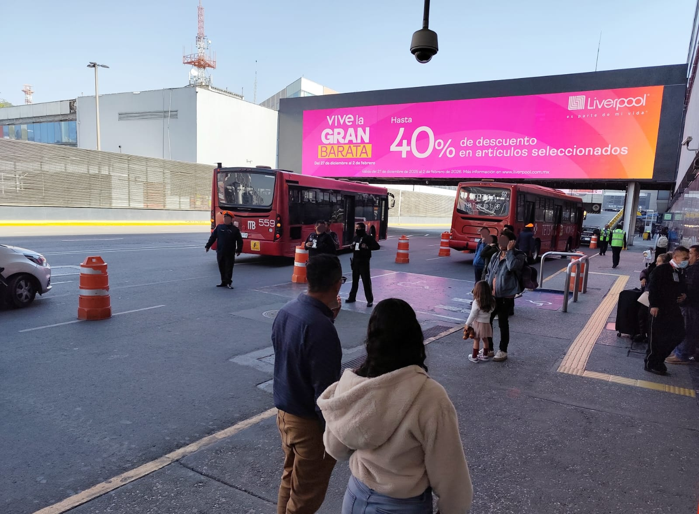

Verificación de campañas publicitarias
con evidencia que no deja dudas
¿Tu campaña está donde se supone que debe estar? Generamos testigos fotográficos con timestamp y geolocalización GPS en cada punto de activación para confirmar que la ejecución coincide exactamente con lo contratado.
¿Qué es la verificación de campañas publicitarias?
La diferencia entre confiar en el proveedor y tener evidencia que lo confirma.

La verificación de campañas publicitarias es el proceso de documentar en campo —con evidencia fotográfica profesional, geolocalización GPS y timestamp— que los anuncios contratados (vallas, espectaculares, pantallas digitales, material POP o displays en PDV) se instalaron, se activaron y permanecieron en las condiciones pactadas con el proveedor durante el periodo de la campaña.
En México, la industria publicitaria opera bajo contratos de exposición donde el proveedor garantiza determinadas condiciones de visibilidad y tiempo. Sin un testigo fotográfico independiente, la marca queda en desventaja al momento de reclamar incumplimientos o negociar bonificaciones.
Publiser MX actúa como tercero verificador independiente: nuestros supervisores visitan cada punto de activación, generan el expediente fotográfico y lo entregan en menos de 24 horas con metadata verificable, transformando la palabra en evidencia accionable.
¿Qué incluye cada testigo de verificación?
Cada visita genera un paquete de evidencia estructurado y listo para presentar ante el proveedor o la dirección de marketing.
Fotografía HD
Imagen de alta resolución desde el ángulo de mayor visibilidad e impacto al público objetivo, con metadata EXIF intacta.
Timestamp verificable
Fecha y hora exacta incrustada en la fotografía y en el reporte. Impugnable ante cualquier proveedor como evidencia de la condición del anuncio en ese momento.
Geolocalización GPS
Coordenadas GPS precisas de cada punto visitado. Confirma que la visita se realizó en el lugar exacto de la instalación publicitaria contratada.
Reporte ejecutivo
Informe estructurado con estado de cada punto, incidencias detectadas, porcentaje de cumplimiento y recomendaciones de acción inmediata.
¿Cuándo solicitar verificación de tu campaña?
Cada fase de la campaña tiene un riesgo diferente. La verificación oportuna en cada una protege el total de la inversión.
Verificación inicial
Confirma que todos los anuncios se instalaron correctamente al arranque. Detectar errores en los primeros días permite corrección sin pérdida de días contratados. Ideal dentro de las primeras 48 horas de la campaña.
Verificación intermedia
Para campañas de duración media (2 a 8 semanas), una visita a mitad del periodo detecta deterioro del material, cambios en la visibilidad por obras o vandalismo antes de que impacten el resultado final.
Verificación final
Al cierre de la campaña documenta el estado real de cada punto, el cumplimiento efectivo del periodo contratado y genera el expediente definitivo para facturación y reliquidación con el proveedor.
Verificación de emergencia
Cuando recibes un reporte de incidencia de tu equipo o cliente, una visita urgente con evidencia fotográfica permite confirmar, dimensionar y gestionar la solución con el proveedor de forma ágil.
Del brief a la evidencia en 3 pasos
Proceso ágil diseñado para entregar evidencia verificable en el menor tiempo posible.
Envías el brief
Listado de ubicaciones, fechas y lineamientos de verificación. Puede ser tan simple como un Excel con direcciones y fotos de referencia del material instalado.
Visitamos en campo
Supervisores asignados recorren cada punto en la fecha y horario acordados. Capturan fotografía HD con timestamp y GPS en cada ubicación del brief.
Recibes la evidencia
Expediente completo en menos de 24 horas: galería fotográfica, reporte de incidencias, porcentaje de cumplimiento y recomendaciones accionables.
Lo que dicen quienes ya verifican con Publiser
"El equipo Publiser es profesional y siempre está disponible para el servicio urgente, además los entregables son con calidad y prontitud."
"El equipo Publiser ha sido versátil y dinámico para dar solución a incidencias en el punto de venta. Su experiencia en fotografía y video ha sido fundamental para ayudar a otros proveedores."
Preguntas frecuentes sobre verificación de campañas
¿Qué es un testigo fotográfico publicitario?
Es una fotografía profesional con timestamp y geolocalización GPS que documenta el estado de un anuncio en un momento específico. Sirve como evidencia verificable ante el proveedor de espacios y como respaldo contractual.
¿Cuánto tarda en llegar la evidencia después de la visita?
La evidencia fotográfica está disponible en menos de 24 horas. Para campañas con fecha crítica de inicio podemos entregar el mismo día hábil de la visita.
¿La verificación sirve para exigir bonificaciones al proveedor?
Sí. El expediente con timestamp y GPS es el instrumento estándar de la industria para documentar incumplimientos y gestionar compensaciones o bonificaciones con el proveedor de espacios publicitarios.
¿Pueden verificar campañas activas de forma urgente?
Sí, contamos con supervisores disponibles para visitas urgentes en CDMX y Zona Metropolitana. Para campañas de lanzamiento o incidencias críticas coordinamos visita en el mismo día hábil.
Amplía tu cobertura de verificación
Solicita la verificación de tu campaña
Cuéntanos cuántos puntos necesitas verificar y en qué fechas. Te respondemos en menos de 24 horas.